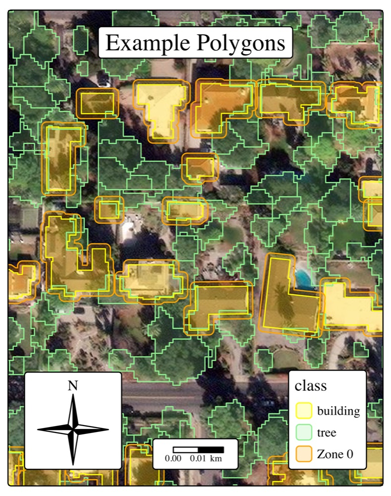
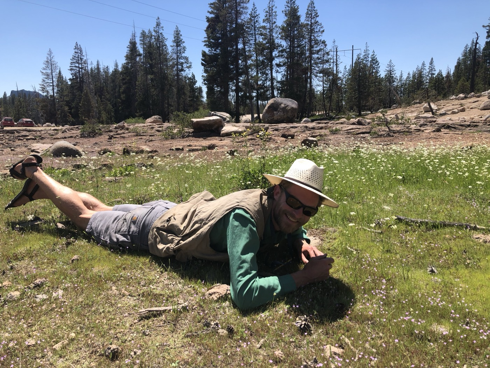
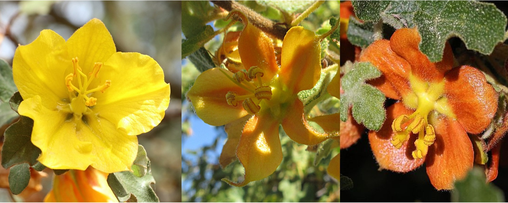

In the wake of the 2025 fires in Altadena and Pacific Palisades there was a focus in some circles on which tree species seemed to have survived the fire and which may have been responsible for accelerating spread. This interest grew more urgent as CA’s AB 3074 mandating 5ft of fully cleared space around structures neared full implementation. In 2025 I led an effort at the Urban Forest Institute to try and assess how the presence of urban trees in these fires impacted structure loss. This work has resulted in a publication showing that although urban trees did have an effect on which structures were lost, the effects were different between fires and small compared to the effect of structure density.
I am also part of an effort at the Urban Forest Institute to improve allometric equations for urban trees by leveraging data collected by professional tree companies during maintenance efforts and tree inventory projects. Through this work we hope to increase the number of urban trees with species specific allometric equations, especially important to California’s diverse urban forest.
Kenny et al. (2026) Urban trees and structure loss in the 2025 Eaton and Palisades fires. Urban Forests and Urban Greening [PDF]

I was lucky enough to be able to dive deep into the evolutionary history of the Rush family during my Ph.D. work. Juncus is a favorite group of mine and California is a global hotspot for Juncus diveristy. I am fascinated by the relationships between some of the annual taxa in Juncus found in California and some high elevation cushion plants found in the Andes and was able to shed more light on relationships in this diverse section of the family. This work has resulted in a publication which was published in 2026 by the American Journal of Botany.
Kenny et al. Phylogenetic Systematics of Juncaceae. American Journal of Botany [PDF]

During my career as a field botanist and while conducting the floristic study that was my Master’s thesis, I always had a deep desire to know what was going on with individuals that just did not seem to fit into their species definition. I was able to make inroads into these questions in a few taxa during my Ph.D., my focal group Juncus as well as an iconic endagered species Fremontodendron decumbens. Below are publications that led to and came out of this work.
Kenny, R., Potter, D. (In Press) Gene Flow Blurs Species Boundaries in the Juncus ensifolius – saximontanus (Poales: Juncaceae) Species Complex. Systematic Botany.
Kenny, R., McMahan, W., Ayres, D., Meyer, V., Grotkopp, G., Still, S., Potter, D. (2025) Investigating putative hybrids of Fremontodendron decumbens and F. californicum in the Sierra foothills. Madroño. [PDF]
Kenny, R., West, J.A., Neubauer, D., Yost, J.M., Grossenbacher, D., Ritter, M. (2023) A Floristic Study of Swanton Pacific Ranch, Santa Cruz County, California. Madroño. [PDF]
Kenny, R., West, J. A., Johnson, H., Yost, J. M., Ritter, M. (2022) A New Combination in Sanicula Crassicaulis (Apiaceae). Madroño. [PDF]